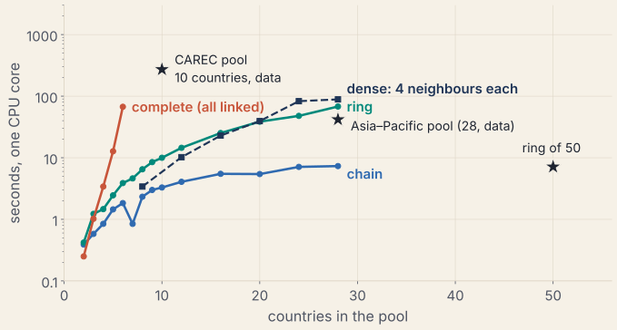
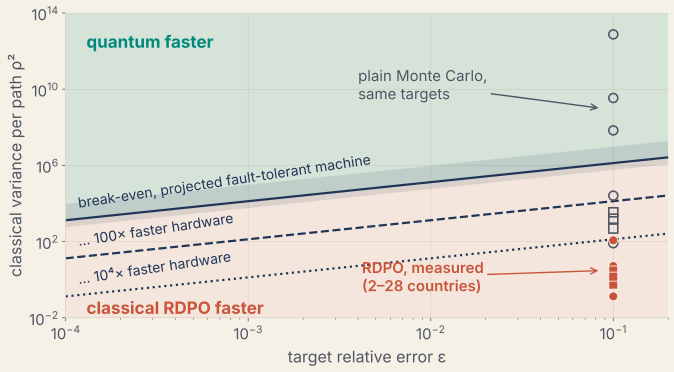

1 · Exact
Tensor networks
Quantum-inspired. The full joint law with zero sampling error, for pools of up to 28 countries.
ADB Quantum Innovation Challenge · Phase 1
How often several countries’ disaster covers pay out together: computed exactly where possible, learned where not, and costed on quantum hardware.
Exact where possible, learned where not, quantum where it can be shown to pay.
The problem
chance that both countries exhaust their US$80m cover in the same three-year term
of plain Monte Carlo runs with the benchmark’s 16,384 paths return exactly zero
joint states a year for n countries; regional pools have 10–30, with tails near
Our answer
Quantum-inspired. The full joint law with zero sampling error, for pools of up to 28 countries.
Rényi-Doob Policy Optimization learns the zero-variance importance sampler where exact contraction fails. Unbiased, with 95% intervals.
Exact state loading, resources linear in pool size, and a measured break-even bar.
One exact model feeds all three: payouts as a product of independent Poisson sources.
1 · Exact, quantum-inspired

every value of the brief’s benchmark table, reproduced exactly
28-country Asia–Pacific pool, calibrated to public data
dense pool of 28, each country linked to its next four
2 · Learned: Rényi-Doob Policy Optimization

lower error on joint exhaustion, the rarest target
of nominal 95% intervals cover the exact value
more accurate on rare targets than splitting, SMC and flow-based sampling
Try it
The two-country benchmark, solved live: the exact answer, a plain Monte Carlo run, and RDPO with the same number of simulated paths. Pools above US$80m use the brief’s threshold.
Honest accounting
| Setting | Cells | RDPO better, same paths | RDPO better, same CPU time |
|---|---|---|---|
At equal CPU time RDPO keeps joint exhaustion ( benchmark cells). Phase 2 targets the gap: a GPU engine and tensor-network value functions.
Model risk
Pr(pool pays more than US$80m in a term), over every dependence consistent with each country’s own risk
earthquake events shared by both countries: brief → loss records 1900–2020 (95%: )
extreme rain shared by neighbours: brief → weather stations (95%: )
of expected payouts kept by one shared US$80m limit: brief → public data
Public proxies (loss years, station rain), not the bond’s triggers: a stress range, not a re-pricing.
3 · Quantum stage

emulated error of the exact loading circuits
speed-up needed, 2 → 28 countries: the gap closes with size
error on an IBM Heron-class noise model; the trust guard falls back to classical
| Brief’s benchmark, exact | |
| RDPO estimate, training included | |
| 28-country pool, exact | |
| 28-country pool, rarest tail, RDPO |
No GPU; memory under 1 GB throughout.
| Near-term 2 countries | Fault-tolerant 2 countries | Fault-tolerant 28 countries | |
|---|---|---|---|
| Physical qubits | |||
| Logical qubits | – | ||
| Run time | min |
Surface code at physical error 10−3; 10% relative error. RDPO on the 28-country task: .
Phase 2 · 30 Nov 2026 – 22 Jan 2027
Team
In one slide